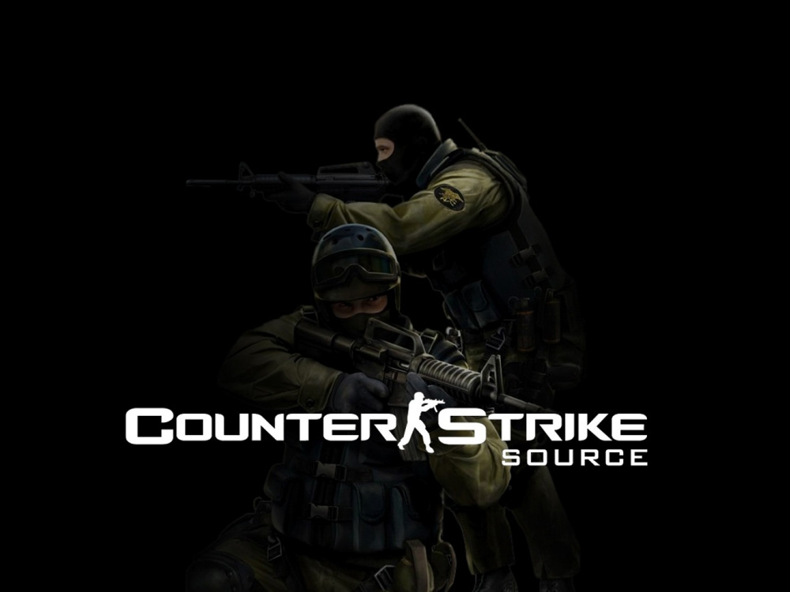

Counter-Strike: Source (сокращается до CS: Source и CS:S) — компьютерная игра в жанре многопользовательского командного шутера от первого лица, разработанная компаниями Valve и Turtle Rock Studios; ремейк Counter-Strike, модификации 1999 года для игры Half-Life. Построенная на игровом движке Source, игра была выпущена в 2004 году изначально в комплекте с Half-Life 2, однако позже появились и отдельные её издания. Как и в оригинальной версии игры, в Counter-Strike: Source друг другу противостоят команда контр-террористов (CT, спецназа) и команда террористов (T) в серии раундов. Каждый раунд выигрывается посредством выполнения определённой миссии, такой как подрыв бомбы или спасение заложников, либо после уничтожения всех членов вражеской команды. Игровой процесс аналогичен таковому в Counter-Strike. Большинство видов оружия также идентично Counter-Strike за исключением щита, который был доступен только контр-террористам.
